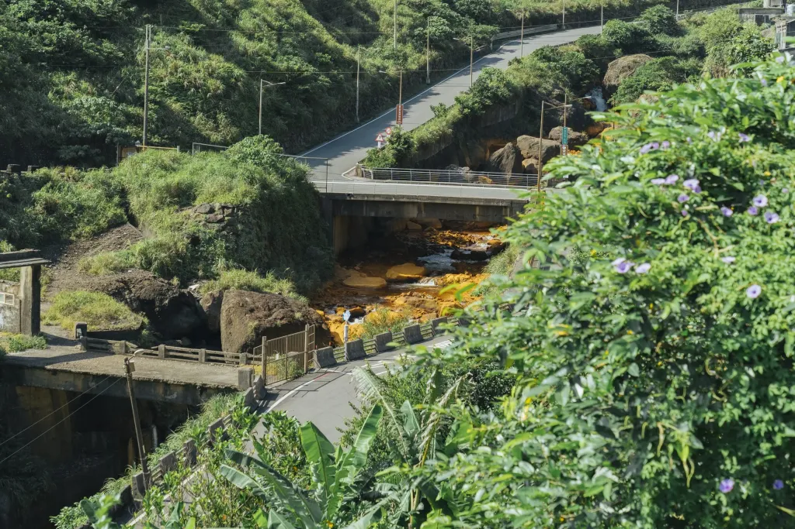
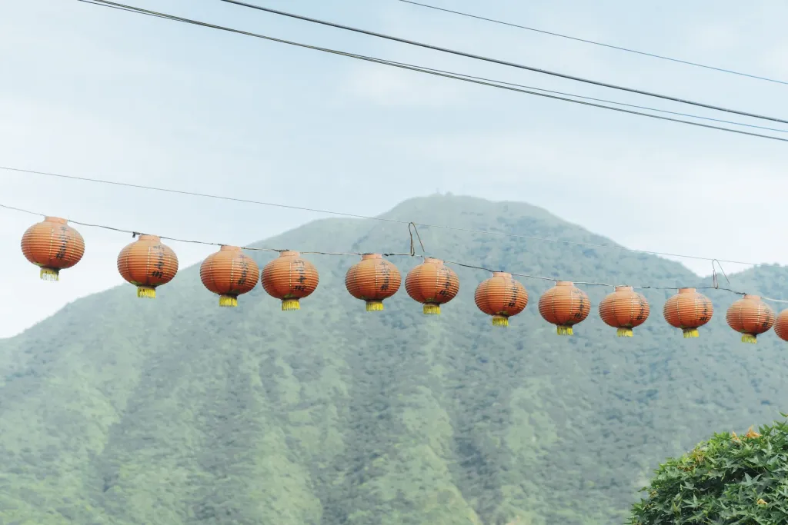
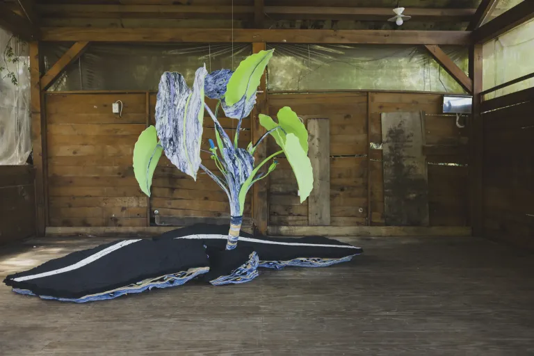
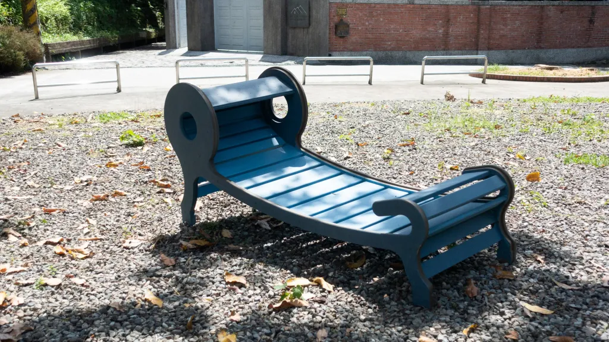
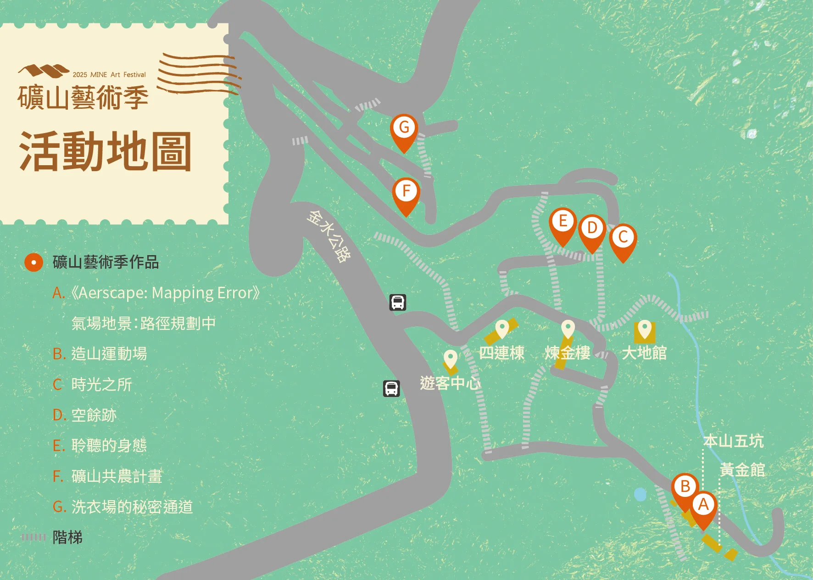

最新消息
關於藝術季
藝術作品
展演活動
參觀資訊
Language

6/27 — 8/24
瑞芳 | 免費入場
什麼是
礦山藝術季？
礦山藝術季是以金瓜石為舞台，一年一度邀請地方共同舉辦的藝術節慶。
關於藝術季
藝術作品

展演活動

最新消息
交通資訊
探索更多
探索 Explorer
全部活動
官方行旅
工作坊
藝文表演

共創作品
造山運動場
太認真 - 余文瑛、郭柏俞
五坑口 / 2025

工作坊
聆聽的身態
鄭琬蒨 ft. 石山里歌唱班
黃金博物館 / 2024
藝文表演
造山運動場
太認真 - 余文瑛、郭柏俞
五坑口 / 2025
共創作品
聆聽的身態
鄭琬蒨 ft. 石山里歌唱班
黃金博物館 / 2024
更多作品
地圖導覽 Map Preview
在 Google 地圖開啟

點擊查看作品分布與交通路線
詳細交通方式